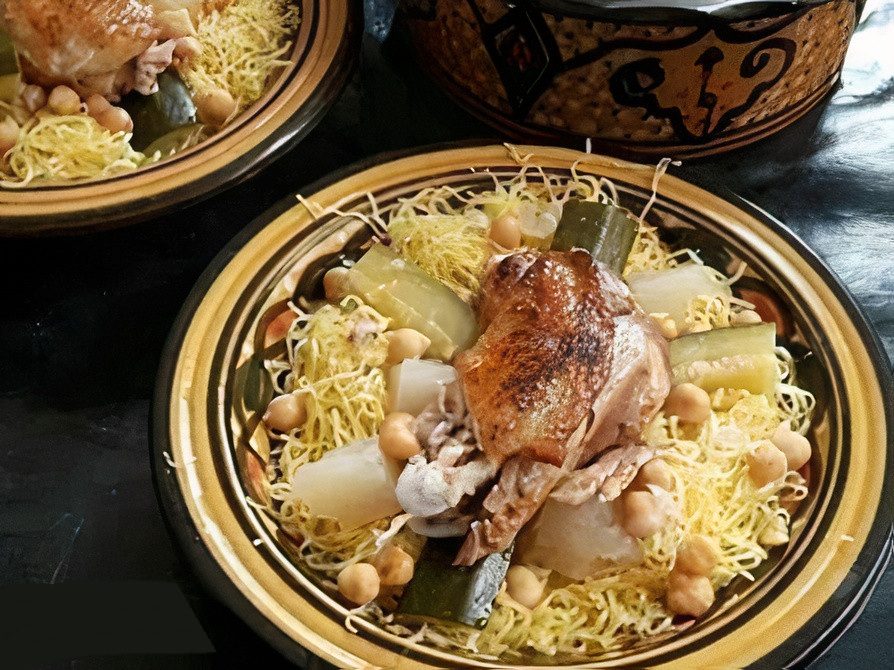

Rechta

description
Rechta is a traditional Algerian dish that is also popular in other North African countries. It is a type of pasta dish made with thin noodles, typically served with a meat-based broth and a variety of vegetables. The dish is known for its flavorful and aromatic broth, which is often prepared with meat such as chicken or lamb, as well as a blend of spices like cumin, coriander, and cinnamon. Rechta is a dish that is commonly prepared for special occasions and family gatherings. It is appreciated not only for its rich and savory flavors but also for the communal aspect of sharing a large pot of this comforting and hearty meal.
Ingredients
- 1kg of chicken or lamb
- Rechta noodles
- 1 large onion
- 3 cloves of garlic
- 2 tomatoes
- 2 carrots
- 2 turnips
- 1 cup chickpeas, soaked over night
- 2 tablespoons vegetable oil
- 1 teaspoon ground coriander
- 1 teaspoon ground cinnamon
- salt and black pepper
Steps
A/ The Broth
- In a large pot, heat the vegetable oil over medium heat.
- Add the chopped onion and minced garlic, sauté until translucent.
- Add the chopped tomatoes and cook until they are soft.
- Add the meat pieces and brown them on all sides.
- Season with cumin, coriander, cinnamon, salt, and pepper.
- Pour enough water to cover the meat, bring to a boil, then reduce the heat and simmer until the meat is tender.
- Add the soaked chickpeas to the broth and continue simmering.
- Once the chickpeas are partially cooked, add the carrots, turnips, and potatoes.
B/ the noodles
- Bring a separate pot of water with half an empty lemon to a boil
- In a container put your rechta noodles and add a 3 tablespoons of oli and mix it well
- After you mix your noodles cook them on steam for about 20 minutes